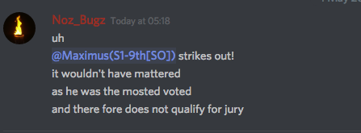

I am really grateful to be able to stay in this community. Looking back, it is really amazing to see how much we growth as a community. We have some unfun moment. Some sad moment. Some moment that suck etc. But there is also some fun moment too, some moment that can be part of our important memories. How about we list down all the event down that happened in the forum? Some event that you feels deeply about, some event that is fun, and some event that have special place or recognition in our heart.
Legends:
Red = Important Event
Blue = Personal Event
Green = Honorable Event
Purple = Meme Event
Orange = Roleplaying Event
Yellow = Miscellaneous Game/Event
2017
⇣
January
January 2017 - First FoL game. (This game was the test version of what our modern Forum of Lies is, people still figuring out how to balance the game.)
⇣
Febuary
Febuary 20 - First ever permaban. The one who banned him was Boopy. The one who received the ban was WildRaven, and he was banned for being a bad bad bird boy.(Click on the link to see what rule has he broken.)
May
May 12 - @Ami joins the forum
⇣
May 24 - A rare error in the internet caused by Icibalus causes him to accidentally become a person
⇣
May 26 - Brakuren Writes his way in.
⇣
2018
⇣
January
January 26 - Pug gets permabanned for the first and hopefully last time. (He posted a image ranting about a player he met on Forum, it get taken down and he is banned shortly after the incident.)

⇣
Febuary
Febuary 2 - Dark age of FM. (Time where there is too many Forum Mafia and some are getting canned due to too many game there are.)
⇣
Febuary 5 - The Birth of Hippo Number 2 (Icibalus accidentally put two hippolytus down inside playerlist, thus the birth of meme alt account of Hippo: @Hippolytous @anon99679435 etc…)
⇣
Febuary 12 - Pug turns 15 and still is banned.
⇣
Febuary 18 - Marl dies from the Plague
⇣
March
March 2 - Oh hey, Pug’s back.
⇣
March 14- Nerbins finally changes his stupid orange PFP because of this game.
⇣
March 19 - The first Ultimate Death Game is hosted
April
April 17 - NozBugz lore is released
⇣
April 17 - The Dark Age of Upick.
⇣
April 18 - Brakuren gets bullied by the mod team
⇣
April 20 - @Simon wins Spyfall game 1
⇣
April 24 - @Frostwolf103 was the first person to join the Rngeus Faith that @Firelitten made (other than Firekitten of course) https://forum.imperium42.com/t/fm-unknown-day-1/58833/1248?u=htm
⇣
April 26 - Danganronpa Star Academy starts. Wonder how that’ll go.
⇣
April 29 - The identity of RNGesus was revealed to the public. It’s was none other than known Ultimate Gambler @Margaret. https://forum.imperium42.com/t/sending-classcards-bastardized-camelot/59659?u=twil1ight (Canned due to inactivity)
⇣
April 30 - Danganronpa Rise and Fall finally came to a happy ending.
⇣
May
May 1-The remaining castaways in Survivor:Noz’s Legacy are merged into the Legacy Tribe, starting the jury phase of the game.
⇣
May 2- First round of FoLT hosted by Wolfy and Pug. https://forum.imperium42.com/t/folt-game-1-night-1-16-16-confirmation-phase/60901?u=wolfy
⇣
May 3-Maximus strikes out, disqualifying him for jury in Survivor: Noz’s Legacy
⇣
May 5 - JammyBoopyRubyCatherineDoopSplodge turns 18
⇣
May 20 ~ 22 - Rebels in the Palace happens, inciting the world’s desire for both more turbo games and more @Ashe games.
⇣
May 30 - Yodoko Izara AKA @PokemonKidRyan gets away with murder in Danganronpa Star Academy due to a general lack of activity from the playerbase, and thus, the game ends. It’s unanimously agreed Zakai’s (@Whammerist) trial was better. 
June
June 16 - Brakuren said his regards to the community for he believed that he no longer had the same enjoyment has he once did, whether it be him feeling to be targeted, or him being harassed every time he trued to make a joke
⇣
June 18- Noz returns for a day due to it being his birthday (Happy late birthday Noz)
⇣
June 21- Finally, a queue for FMs was made, and the Dark Age of Upick came to an end.
⇣
June 22- First experimental FoL. (Testing FoL with reduced feedback and see if it would balance the strength of Blue Dragon)
⇣
June 25- @Margaret creates the Ace Attorney Apocalypse
⇣
July
July 13 - The sequel of SFoL blender has come to us!
⇣
July 26 - The largest FM we ever have in the forum, Fire Emblem: Fates.
August
August 31 - The First Draw in history of this forum.
September
September 15th - Hippolytus leaves the forums. This sparked the biggest player-base decline in the forum’s history.
⇣
September 16th - In Hippo’s Memory, his Community Roast Game is attempted to be hosted.
Disclaimer: It got canned.
October
November
November 11 - Forum rerolled back to back up due to some technical issue, causing a rewind of 1 day back in time, which is quite disastrous for several games.
⇣
November 18 - The Second Coming of Brakurchrist.
⇣
November 24 - The First FM Global Blacklist ever. Hjasik screencapped his classcard and put it in thread, ruining the entirety of Homestuck FM and forcing a reroll to take place.
⇣
January
January 19th - The highest post count we ever have in a forum game, 14250!
February
February 7-19th - Nobody gets off Eevee’s Wild Ride
February 18th - Geyde cans the ToL RP.
March
April
May
May 3 - HTM has returned from the dead!